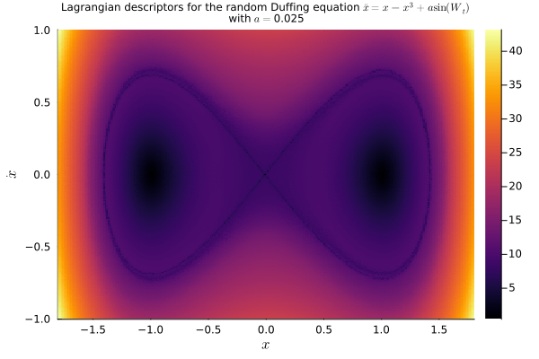

Random Ordinary Differential Equations
We considere, now, some examples of applying the Lagragian descriptor method to equations of the type RODEProblem.
Random Duffing equation
We consider, first, the random Duffing equation
\[\ddot x = x - x^3 + a\sin(W_t),\]
where $\{W_t\}_t$ is a standard Wiener process.
With LagrangianDescriptors.jl, we i) start by setting up the equation as a RODEProblem; next, we ii) wrap that as a LagrangianDescriptorProblem; then we iii) solve it; and finally, we iv) plot the result with the built-in plot recipe.
So we first load the relevant packages:
using StochasticDiffEq, DiffEqNoiseProcess
using Plots
using LinearAlgebra: norm
using LagrangianDescriptorsNext we set up the RODEProblem:
function f!(du, u, p, t, W)
x, y = u
du[1] = y
du[2] = x - x^3 + p * sin(W)
end
p = 0.025
u0 = [0.5, 2.2]
tspan = (0.0, 8.0)
W = WienerProcess(0.0, 0.0)
prob = RODEProblem(f!, u0, tspan, p, noise=W)With the RODE problem setup, we choose an infinitesimal Lagrangian descriptor, a collection of initial conditions on the phase space, which is the region to be "painted", and finally we build the LagrangianDescriptorProblem:
M(du, u, p, t, W) = norm(du)
uu0 = [[x, y] for y in range(-1.0, 1.0, length=301), x in range(-1.8, 1.8, length=301)]
lagprob = LagrangianDescriptorProblem(prob, M, uu0)The Lagrangian descriptors are the time-integration of the infinitesimal descriptor along forward and backward solutions of the equation. They are integrated along with the solutions by "solving" the LagrangianDescriptorProblem, with an overload of the solve method from the SciML ecosystem:
lagsol = solve(lagprob, RandomHeun(), dt=1/100)With the solution at hand, we plot the Lagrangian descriptors to visualize the dynamics of the system:
plot(lagsol, title="Lagrangian descriptors for the random Duffing equation \$\\ddot x = x - x^3 + a\\sin(W_t)\$\nwith \$a=\$$p", titlefont=8, xlabel="\$x\$", ylabel="\$\\dot x\$")
savefig("img/duffing_random.png")